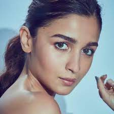
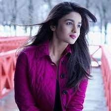

ALIA BHAT
Profile
 ALIA BHAAT 1942 gretters and influential produces ,television host coaasional playback singer former politics in the history of cinema during 1970 industry beyond he was tha man form large overseas ffollowing in the markets fraciois traufat called him a one man industry beyonf the united kingdom carriben (din 1978 film).Bachchan was born in 1942 in Allahabad to the Hindi poet Harivansh Rai Bachchan and his wife, the social activist Teji Bachchan. He was educated at Sherwood College, Nainital, and Kirori Mal College, University of Delhi. His film career started in 1969 as a voice narrator in Mrinal Sen's film Bhuvan Shome. He first gained popularity in the early 1970s for films such as Zanjeer, Deewaar, Sholay and Don (1978 film). He was dubbed as India's "angry young man" for his on-screen roles in Hindi films. Referred to as the Shahenshah of Bollywood (in reference to his 1988 film Shahenshah), Sadi ka Mahanayak (Hindi for, "Greatest actor of the century"), Star of the Millennium, or Big B, he has since appeared in over 200 Indian films in a career spanning more than five decades, and has won numerous accolades in his career, including four National Film Awards as Best Actor, Dadasaheb Phalke Award as lifetime achievement award and many awards at international film festivals and award ceremonies. He has won fifteen Filmfare Awards and is the most nominated performer in any major acting category at Filmfare, with 41 nominations overall. In addition to acting, Bachchan has worked as a playback singer, film producer and television presenter. He has hosted several seasons of the game show Kaun Banega Crorepati, India's version of the game show franchise, Who Wants to Be a Millionaire?. He also entered politics for a time in the 1980s.
EARLY LIFE
Bachchan was born on 11 October 1942 in Allahabad to the Hindi poet Harivansh Rai Bachchan, and social activist Teji Bachchan. Harivansh Rai Bachchan was an Awadhi Hindu Kayastha, who was fluent in Awadhi, Hindi and Urdu. Harivansh's ancestors came from a village called Babupatti, in the Raniganj tehsil, in the Pratapgarh district, in the present-day state of Uttar Pradesh, in India. Teji Bachchan was a Punjabi Sikh from Lyallpur, Punjab, British India. Bachchan has a younger brother, Ajitabh. Bachchan was initially named Inquilaab (Hindustani for "Revolution"), inspired by the phrase Inquilab Zindabad (which translates into English as "Long live the revolution") popularly used during the Indian independence struggle. However, at the suggestion of fellow poet Sumitranandan Pant, Harivansh Rai changed the boy's name to Amitabh, which, according to a The Times of India article, means "the light that will never die". Although his surname was Shrivastava, Amitabh's father, who opposed the caste system, had adopted the pen name Bachchan ("child-like" in colloquial Hindi), under which he published all of his works. When his father was looking to get him admitted to a school, he and Bachchan's mother decided the family's name should be Bachchan instead of Shrivastava.[18] It is with this last name that Amitabh debuted in films and used for all other practical purposes, Bachchan has become the surname for all of his immediate family. Bachchan's father died in 2003, and his mother in 2007.
ACTING CARRIER
early carrer (1969-1972)
Bachchan made his film debut in 1969, as a voice narrator in Mrinal Sen's National Award-winning film Bhuvan Shome. His first acting role was as one of the seven protagonists in the film Saat Hindustani,directed by Khwaja Ahmad Abbas and featuring Utpal Dutt, Anwar Ali (brother of comedian Mehmood), Madhu and Jalal Agha. Anand (1971) followed, in which Bachchan starred alongside Rajesh Khanna. His role as a doctor with a cynical view of life garnered Bachchan his first Filmfare Award for Best Supporting Actor. He then played his first antagonist role as an infatuated lover-turned-murderer in Parwana (1971). Following Parwana were several films including Reshma Aur Shera (1971). During this time, he made a guest appearance in the film Guddi which starred his future wife Jaya Bhaduri. He narrated part of the film Bawarchi. In 1972, he made an appearance in the road action comedy Bombay to Goa directed by S. Ramanathan which was moderately successful. Many of Bachchan's films during this early period did not do well. His only film with Mala Sinha, Sanjog (1972) was also a box office failure.
PERSONAL LIFE
Bachchan, his wife Jaya, his son Abhishek, and his daughter-in-law Aishwarya Bachchan married actress and politician Jaya Bhaduri in 1973 and together they have two children Abhishek, an actor, and Shweta, an author, journalist, and former model. Abhishek married fellow actress Aishwarya Rai and together they have a daughter named Aaradhya. Shweta is married to businessman Nikhil Nanda who is a part of the Kapoor family of Bollywood. Together they have two children Navil and Agastya. The family resides in his two famous houses, Jalsa and Pratiksha, both in Mumbai in the Indian state of Maharashtra. Bachchan and fellow actress Rekha were rumoured to be having an affair in the 1970s till the early 1980s. Neither have confirmed or denied the rumours. However in a BBC interview, director Yash Chopra, when speaking about the film Silsila, confirmed that the two had an affair saying "I was always on tenterhooks and scared because it was real life coming into reel life. Jaya is his wife and Rekha is his girlfriend and the same story is going on. Anything could have happened because they are working together." Many have commented on the similarities between the plot of Silsila (which starred Amitabh Bachchan, Jaya Bhaduri and Rekha) and the private lives of Bachchan, Bhaduri and Rekha.
awards , honours ,and legacy
Apart from industry awards won for his performances throughout the years, Bachchan has received several honours for his achievements in the Indian film industry. In 1991, he became the first artist to receive the Filmfare Lifetime Achievement Award, which was established in the name of Raj Kapoor. Bachchan was crowned as Superstar of the Millennium in 2000 at the Filmfare Awards. In 1999, Bachchan was voted the "greatest star of stage or screen" in a BBC Your Millennium online poll. The organisation noted that "Many people in the western world will not have heard of [him] ... [but it] is a reflection of the huge popularity of Indian films." In 2001, he was honoured with the Actor of the Century award at the Alexandria International Film Festival in Egypt in recognition of his contribution to the world of cinema. Many other honours for his achievements were conferred upon him at several International Film Festivals, including the Lifetime Achievement Award at the 2010 Asian Film Awards. In June 2000, he became the first living Asian to have been modelled in wax at London's Madame Tussauds Wax Museum.[195] Another statue was installed in New York in 2009,[196] Hong Kong in 2011, Bangkok in 2011, Washington, DC in 2012, and Delhi, in 2017.